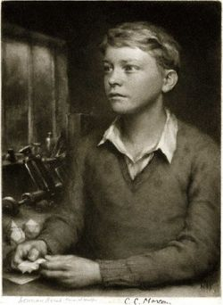

Alan Mathison Turing, one of the greatest mathematicians, born on June the 23rd 1912 in Maide Vale, England showed signs of intelligence specially in mathematics and science at an early age. A man ahead of his time, Alan Turing created the Turing Machine which today is called computers. Founding not only computer science with the Turing machine, but the Turing test that was used for artificial intelligence once founded by Turing.
Julius Mathison Turing and Ethel Sara Stoney, Turing's parents had met and married in India. Julius at the time was a British member of
the Indian Civil Service and Ethel was born in India as her father, Turing's grandfather, was a chief engineer in India.
You may be thinking, how did that work for Turing and his older brother John Turing?
Turing and his brother John did grow up in England, Ethel and Julius were there when Turing was born but
unfortunately, Julius insisted he and Ethel return to India. Turing was 9 months old when he
first went into foster care with his brother, though, the boys finally lived with a retired army
couple in Sussex. Whilst Turing's parents did come visit them in England on their leave, his brother
John once said that "...in many ways both of us felt more at home there(with their foster parents)."
| Name | Immediate Family | Birthdate | Birthplace | Death |
|---|---|---|---|---|
| Julius Mathison Turing | Husband of Ethel Sara Turing Father of John Turing and Alan Turing, OBE FRS |
9th November, 1873 | Edwinstowe, Nottinghamshire, England |
3rd of August, 1947 (73) Surrey, England |
| Ethel Sara Turing (Stoney) | Wife of Julius Mathison Turing Mother of John Turing and Alan Turing, OBE FRS |
18th of November, 1881 | Coimbatore, Tamil Nadu, India |
6th of March, 1976 (94) Worthing, England |
| John Ferrier Turing | Son of Julius and Ethel Turing Brother of Alan Turing, OBE FRS |
1st of September, 1908 | Coonoor, Nilgris, Tamil Nadu, India |
21st of February, 1983 (74) England, United Kingdom |
| Alan Mathison Turing, OBE FRS | Son of Julius and Ethel Turing Brother of John Turing |
23rd of June, 1912 | Maida Vale, City of Westminster, Greater London |
7th of June, 1954 (41) Wilmslow, Cheshire, England |
At the age of 9, Alan was sent to preparatory boarding school in Sussex. He exibited intellect from an early age, had a passion for anything and everything and enjoyed studying new subjects or topics specially mathematics and science.
Alan Turing went onto boarding at Sherborne School in Dorset. Annual reports being criticised for his work, though he considered all of his subjects ‘dull’ finding that both of his favourite subjects(mathematics and science) taught in the school were too easy.
Though stating previously Turing had a hard time making friends in school, he did form one friendship that was very special to him. A loving relationship with another pupil of Sherborne, Christopher Collan Morcom who was also considered as Turing’s first love. An unexpected inspiration to Turing’s future, Christophers life was cut short unfairly, in February 1930 he passed away from complications of Bovine Tuberculosis. This affected Turing massively, forsaking his religious faith and becoming an atheist.
After Sherborne, Turing studied as an undergraduate at the King’s College, Cambridge from 1931 to 1934. Awarded a first-class honour from mathematics, he was elected a fellow which can only happen through very high cases of work and achievements, he proved the central limit theorem which is a probability theory that indicates probabilistic and statistical approaches that work for normal distributions and issues of involving other distributions. However, it had already been proved in 1922 by Jarl Waldemer Lindeberg. Nevertheless, he was still awarded for his own calculations. Two years later, the year of 1936, Turing moved to the United States of America and later earned a Ph.D. in Princeton University in 1938. Developing the universal computing machine that decoded and performed any set of instructions given.
| Year | Location | Award |
|---|---|---|
| 1931-1934 | King's College, Cambridge | First-Class Honours |
| 1935 | King's College, Cambridge | Proved Central Limit Theorem |
| 1935 | King's College, Cambridge | Elected Fellow |
| 1935 | King's College, Cambridge | The Turing Machine |
| 1936 | England | Won Smith's Prize |
| 1936 | England | Published a paper on the Automatic Machine |
| 1938 | Princeton University | Graduated with a Ph.D. |
| 1938 | England | Joined the Government Code and Cypher School |